Former platform work
Visual selling
Quote building
Inventory visibility
Auto-replenishment
Building the tools behind a better dealership experience
Dealership teams need to move smoothly between inspiration, sales, and operations. I helped build a connected set of B2B tools that lets staff show customers products such as wheels, create quotes, understand inventory, manage tire stock, and automate replenishment.
These tools translate dense product and inventory data into focused workflows that support both the conversation at the counter and the decisions happening behind the scenes.
Contributions: Product & UX Design Interface Design Front-End Development